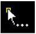

Adding Instances to a Virtual Group
The Design Planning and Analysis tool allows you to add new instances to an existing virtual group created using the Create Virtual Group command. To accommodate the new instances, the area boundary of the updated virtual group is automatically adjusted.
To add a new instance to a virtual group:
- In the layout canvas or Navigator assistant, select the virtual hierarchy to be updated.
-
Choose the Edit – Group – Add to Group option.
The Add to Group command is invoked, as indicated by the trailing ellipsis  following the pointer. -
Click the layout instance to be added to the group.
The area boundary of the selected virtual group automatically resizes to accommodate the new layout instance. The Navigator assistant updates to reflect the newly added instance as belonging to the selected virtual group.
Rectilinear boundaries that are resized are automatically adjusted to form rectangles. To prevent the automatic adjustment of the area boundary, you can set theautoAdjustBoundaryenvironment variable tonil.
Related Topics
Return to top